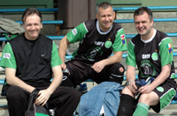

|
Oi Futo, Saturday 10th March, In the previous game against YCAC, the Hibs were out-played and out-muscled and were devoid of any ideas up front to break down a very strong YCAC defense. This week, against France FC, was just the opposite. The Hibs, with three seriously aging players called out of retirement, completely dominated the game, with at least five 1-on-1s with the keeper and hitting the woodwork on three occasions. Hibs finally managed to put one in the back of the net half way through the first half after a clever pass from Twohig put Kuni K through to lob the keeper. Perhaps the Hibs were being too elaborate in the center of the field for their own good. The French players never gave up and drew level with 10 minutes to go, after their forward turned a Hibs defender and smashed the ball past Hitoshi and onto the bar. The ball may have gone in, but a French player made sure by sticking the ball away. And then one of those "what happened next" moments - a ball was over hit through the HIbs defense and Hitoshi came out of the box to clear the ball up field. Unfortunately, he scuffed the clearance and the ball fell to a French midfielder who sweetly hit the ball 50 yards over the Hibs defense to make it 2 - 1. The Hibs were gutted, the French au-dessus de la lune.
un perroquet malade
Other news : the Hibs players have been ordered to study the offside rule in time for the next game after causing the two previous linesmen serious shoulder pain and the referees to chafe their lips on their whistles after 53 offsides in the previous game and 94 in this one (does anyone know if this is a record?).
Report by Karl Twohig.
|